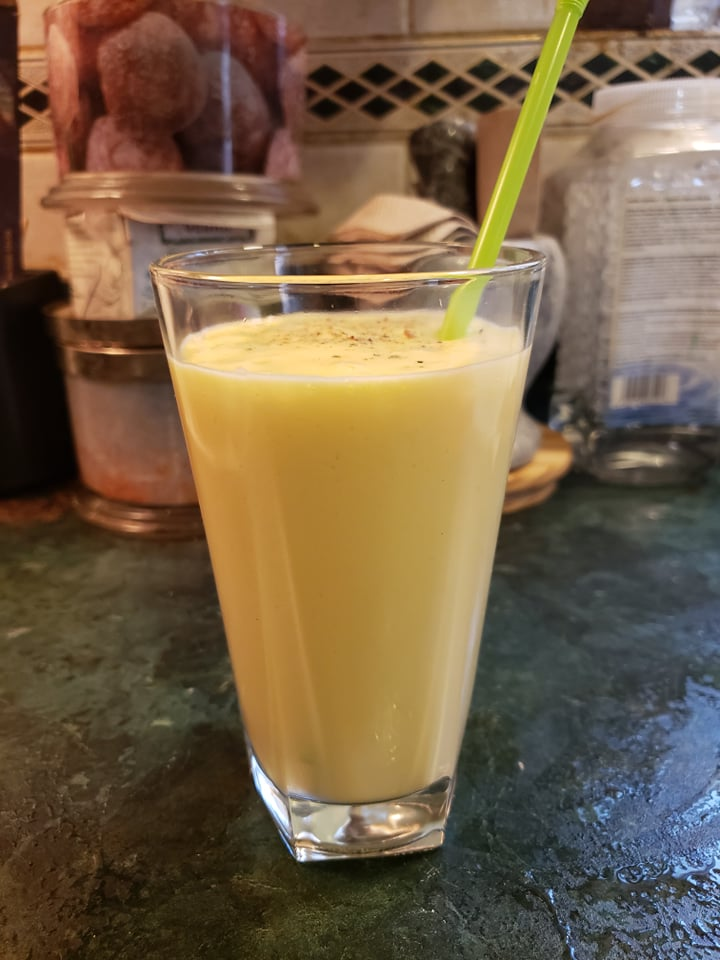

Mango Lassi

Ingredients:
- 1 cup Yogurt
- 1 cup Mango, very ripe, diced
- 1/2 cup Milk
- 1-2 tbsp Sugar or Honey
- Optional: Cardamom or Cinnamon, for garnish
Instructions:
- Place the yogurt, mango, milk and yogurt into a blender. Blend until smooth.
- Transfer to serving glasses. Optionally, garnish with cardamom or cinnamon.